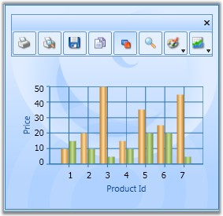

A built-in toolbar is available for the Chart control, which can be made visible to enable the user to do the following functionalities:
· Print the chart
· Print preview the chart
· Save Chart as an image
· Copy chart image to clipboard
· Toggle Legend Appearance
· Toggle Zoom mode
· Change the color palette of the chart
· Change Chart Type
The code provided below illustrates how a ToolBar could be added to the Chart control.
|
[XAML]
<syncfusion:Chart.ToolBar > <syncfusion:ChartToolBar Name="chartToolbar" SelectedItemChanged="ChartToolBar_SelectedItemChanged" CloseButtonVisibility="Visible" TitleBarVisibility="Visible" > </syncfusion:ChartToolBar> </syncfusion:Chart.ToolBar> |

Figure 242: Toolbar for Chart
Excluding or including the Toolbar While Printing and Saving a Chart
You can exclude or include the toolbar while printing and saving a chart using the ShowToolBarOnPrintAndSave property. To include the toolbar, set this to true. To exclude it set this to false. By default this is set to true.
The following code illustrates how to exclude the toolbar while printing and saving:
|
[XAML]
<syncfusion:Chart ShowToolBarOnPrintAndSave="False"> <syncfusion:Chart.ToolBar> <syncfusion:ChartToolBar/> </syncfusion:Chart.ToolBar> <syncfusion:ChartArea> </syncfusion:ChartArea> </syncfusion:Chart> |
|
[C#]
Chart1.ShowToolBarOnPrintAndSave = false; |
The following code illustrates how to include the toolbar while printing and saving:
|
[XAML]
<syncfusion:Chart ShowToolBarOnPrintAndSave="True"> <syncfusion:Chart.ToolBar> <syncfusion:ChartToolBar/> </syncfusion:Chart.ToolBar> <syncfusion:ChartArea> </syncfusion:ChartArea> </syncfusion:Chart> |
|
[C#]
Chart1.ShowToolBarOnPrintAndSave = true; |